AnyPortrait > マニュアル > 複数の値の表示ルール
複数の値の表示ルール
制御パラメータやキーフレームアニメーションでメッシュを隠したり見せたりすることは、キャラクターの表情などを表現する最も効果的な方法の一つです。
これを活用して、キャラクターの感情に応じた表情、ちらつき、話すなどを複合的に表現することができます。
ところで、2つ以上の制御パラメータやモディファイアの値を組み合わせてメッシュを見せる過程でユーザーが困難を経験することもあります。
しばしば私たちのチームに「複数の表情を持ったキャラクターが目を点滅したとき、目のメッシュが消えてしまう問題」を尋ねるのですが、それはまさにこのページで扱うルールによる現象です。
このページでは、問題を例として、マルチモディファイア値による可視性ルールの動作について説明します。
表情と目のちらつき問題再現
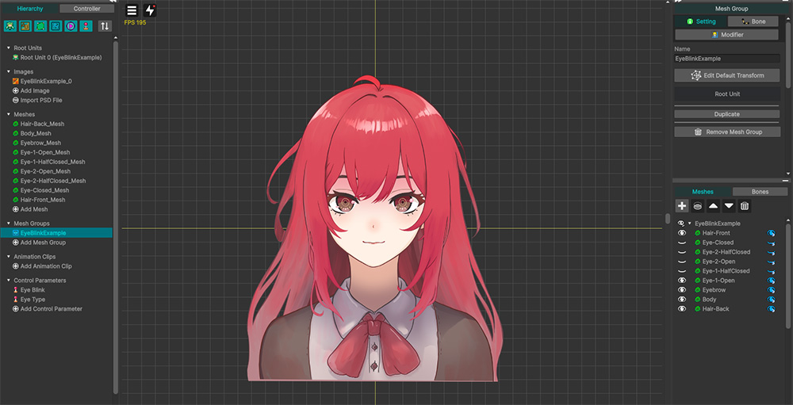
問題を再現するためのサンプルキャラクターです。
2つの表情を持ち、メッシュの可視性を切り替えて目を点滅させるようにします。
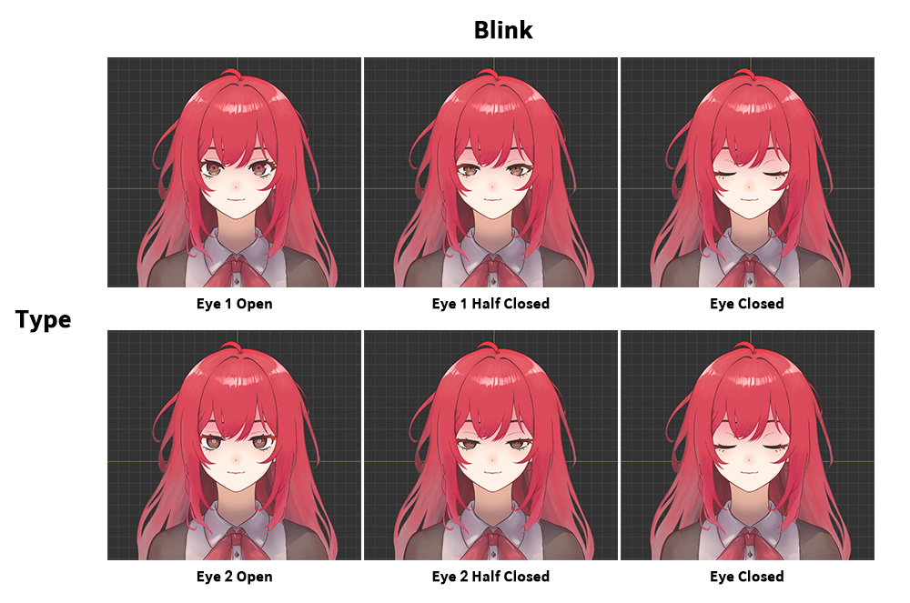
目の形状を決定する2つの制御パラメータ（「Type」、「Blink」）にマッピングするメッシュを整理すると、上記のようになります。
「Eye 1」はちょっと笑顔の表情で、「Eye 2」はちょっと愚かな状態の表情です。
目を閉じるプロセスは3つのフレームで構成されています。
それぞれ「Open」、「Half Closed」、「Closed」です。
各状態を組み合わせて合計6つの形状が出ることができますが、目を閉じた表情は表情とは無関係なので、1つのメッシュ（「Eye Closed」）を共有して表現しました。
次に、合計5つのメッシュをモディファイアに登録し、制御パラメータで制御できるように設定しましょう。
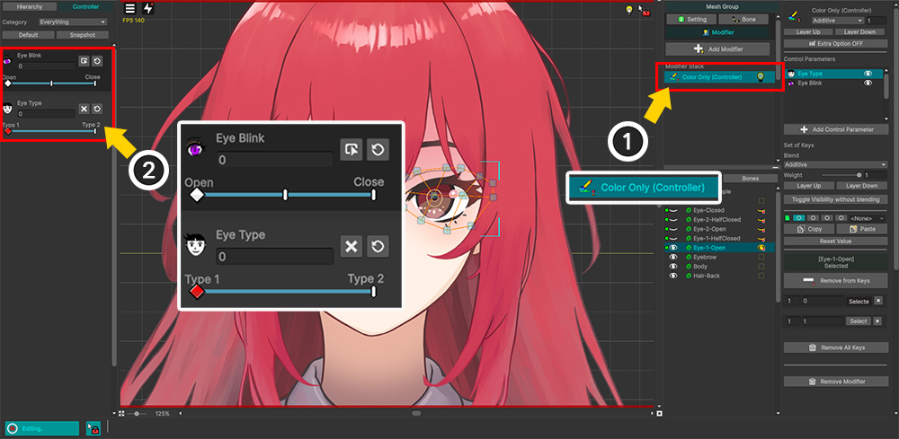
(1) 「Color Only（Controller）」モディファイアを登録します。
(2) 「Type」、「Blink」の2つの制御パラメータに5つの目メッシュをすべて登録します。
次に、2つの制御パラメータにキーを追加し、キー内のメッシュの可視性を設定しましょう。
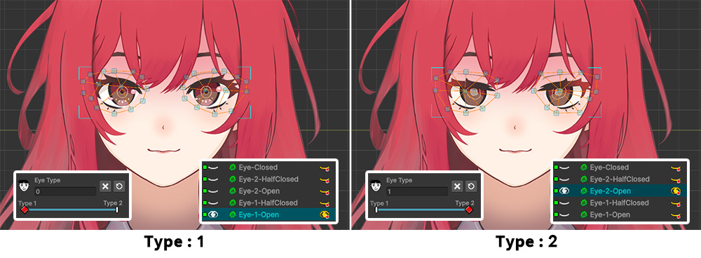
まず、キャラクターの表情を切り替える「Type」制御パラメータでの可視性を設定します。
合計2つのキー（「1」、「2」）を生成しました。
- 「Type」が「1」の値を持つときは、「Eye 1 Open」メッシュのみが見えるように設定しました。
- 「Type」が「2」の値を持つときは、「Eye 2 Open」メッシュのみが見えるように設定しました。
ヒント
このページで説明されている可視性規則を既に知っている場合は、この手順が問題の原因であることを確認できます。
以下の説明で原因と解決策を確認してください。
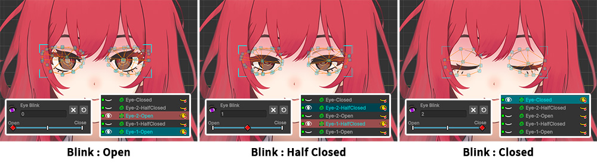
次に、キャラクターが目を点滅させる「Blink」制御パラメータの可視性を設定します。
3つのキー（「Open」、「Half Closed」、「Closed」）を生成しました。
- 「Blink」が「Open」の値を持つときは、「Eye 1 Open」メッシュと「Eye 2 Open」メッシュが表示されるように設定しました。
- 「Blink」が「Half Closed」の値を持つときは、「Eye 1 Half Closed」メッシュと「Eye 2 Half Closed」メッシュが表示されるように設定しました。
- 「Blink」が「Closed」の値を持つときは、「Eye Closed」メッシュのみが表示されるように設定しました。
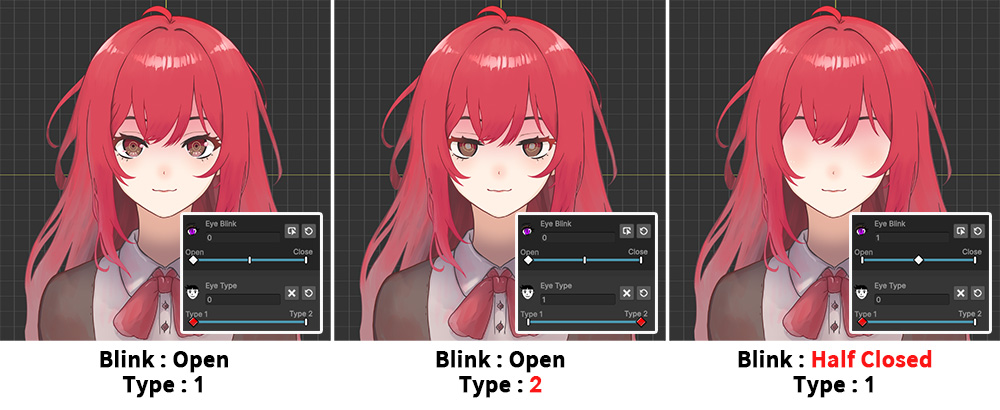
「編集モード」をオフにして制御パラメータを操作して、キャラクターの目メッシュが正常に切り替わるか確認してみましょう。
「Type」パラメータを操作して表情が変わることは、正常に表現になることがわかります。
しかし、目を点滅させるように「Blink」制御パラメータを変更すると、目のメッシュが完全に消えてしまうという問題が発生します。
それぞれの制御パラメータを選択して「編集モード」で作業するときは問題はありませんでした。
この問題を解決するには、複数値での可視性規則を理解する必要があります。
可視性ルールを理解
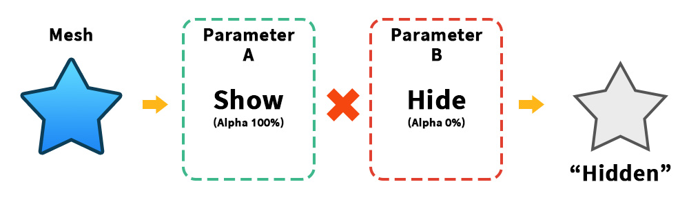
1 つのメッシュを対象に、制御パラメータや複数のモディファイアやキーフレーム値などを組み合わせて見えるようにしたり非表示にしたりする場合、値の組み合わせによってどのような結果が出るかを知る必要があります。
「AnyPortrait」は、色に関連するすべての操作に「乗算」ルールが適用されます。
可視性と「Alpha」操作の場合、表示される状態は 1 で、非表示状態は 0 です。
これを掛けると「1 x 0 = 0」なので、上の画像のように可視性値の一つでも「Hide」であればメッシュは隠された状態になります。
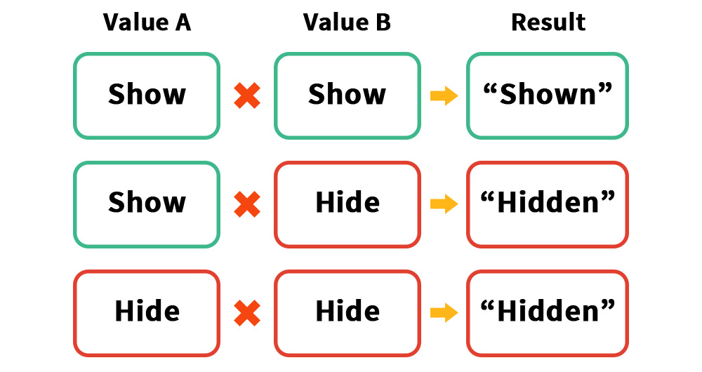
もう少し解いて表の形でまとめてみました。
メッシュの可視性値がすべて「表示（Show）」の場合、メッシュはレンダリングされます。
しかし、可視性の値のいずれかが「隠し（Hide）」の場合、メッシュはレンダリングされません。
ルール自体は難しくありません。
しかし、このルールを応用して「キャラクターの表情」と「目のちらつき」を組み合わせて表現するとき、どのように値を設定するかは少し難しいようです。
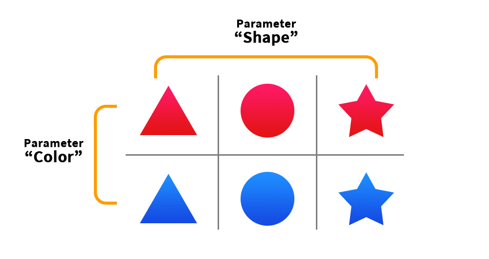
2つの制御パラメータで複数のメッシュの可視性を制御したい場合は、上記のように表を描いて整理すると理解しやすくなります。
それぞれ「Color」と「Shape」のパラメータで6つのメッシュの可視性を制御しましょう。
まず、表の「X軸」と「Y軸」にそれぞれのパラメータを割り当て、パラメータの各値に対応するメッシュを配置すれば、上記の表を完成できるはずです。
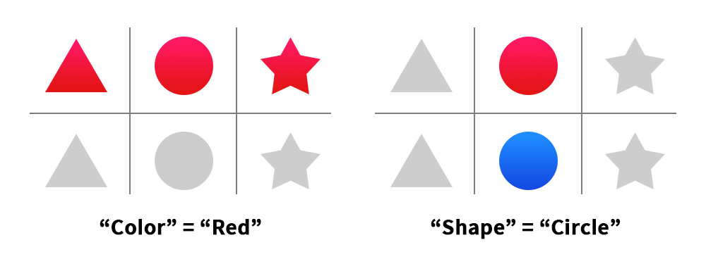
この表では、各制御パラメータのキー値に応じてメッシュの可視性を設定します。
たとえば、「Color」パラメータの「Red」キーでは、外観に関係なくすべての赤いメッシュが表示されるように設定し、残りは非表示にします。
「Shape」パラメータの「Circle」キーでは、色は関係なくすべての円形メッシュが表示されるように設定し、残りは非表示にします。
このように制御パラメータのキーと値を設定するとしましょう。
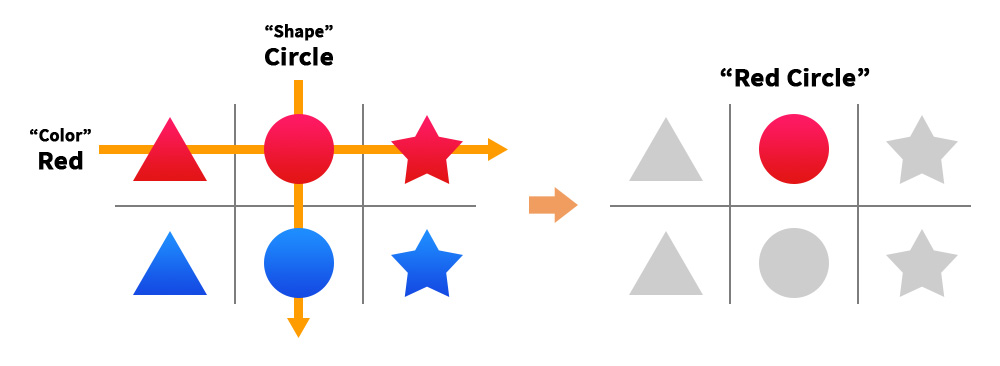
2つの制御パラメータを組み合わせて6つのメッシュのうち1つのメッシュのみを表示するように動作するプロセスを表を通して理解しましょう。
まず、「Color」パラメータが「Red」の場合、1行のメッシュが表示され、2行の青いメッシュは非表示になります。
この状態で「Shape」パラメータが「Circle」の場合、2列の円形メッシュが表示されます。
その結果、各軸で「見えるメッシュの交点」に対応する1行2列の「Red Circle」メッシュが選択されてレンダリングされます。
ヒント
可視性を 1 と 0 に変えて表を描いて理解すると簡単です。
そして、各パラメータが担当するイメージの属性（型、色など）以外の他の属性は考慮せずに値を一括して割り当てると考えれば簡単に作業ができるはずです。
トラブルシューティング

再び例に戻って、このキャラクターの目メッシュの可視性を表の形にまとめて理解しましょう。
キャラクターの「Type（表情）」を「Y軸」に入れ、「Blink（まばたき）」を「X軸」に入れて、それぞれの目メッシュを配置します。
これで、制御パラメータのキーでどのメッシュが表示されるように設定する必要があるかがわかります。
ルールを理解し、前に戻ってもう一度振り返ると、「Type」パラメータによるメッシュの可視性が正しく設定されていないことがわかります。
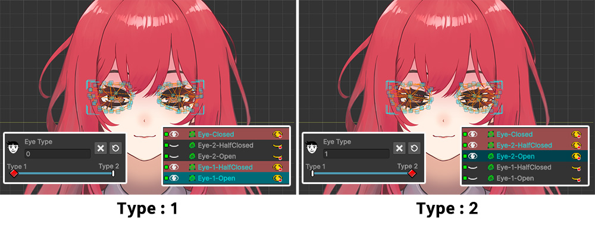
ルールに合わせてメッシュの可視性をリセットします。
- 「Type」が「1」の値を持つ場合、「 Eye 1 Open」メッシュ、「 Eye 1 Half Closed」メッシュ、および「 Eye Closed」メッシュがすべて表示されるように設定します。
- 「Type」が「2」の値を持つ場合、「 Eye 2 Open」メッシュ、「 Eye 2 Half Closed」メッシュ、および「 Eye Closed」メッシュがすべて表示されるように設定します。
この例では、「Eye Closed」メッシュは表情に関係なく表示されます。
その場合は、すべての「Type」キーで常に表示されるように設定する必要があります。
「Blink」の場合は、幸いなことに可視性の値が正しく設定されています。
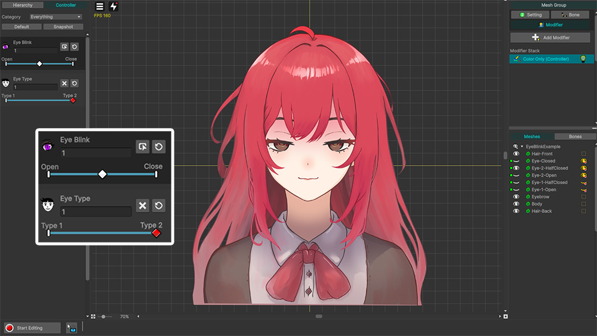
それでは、編集モードをオフにしてテストしてみましょう。
以前とは異なり、表情と組み合わせてキャラクターの目を巻くことができるようになりました。
編集モードでの可視性結果のプレビュー
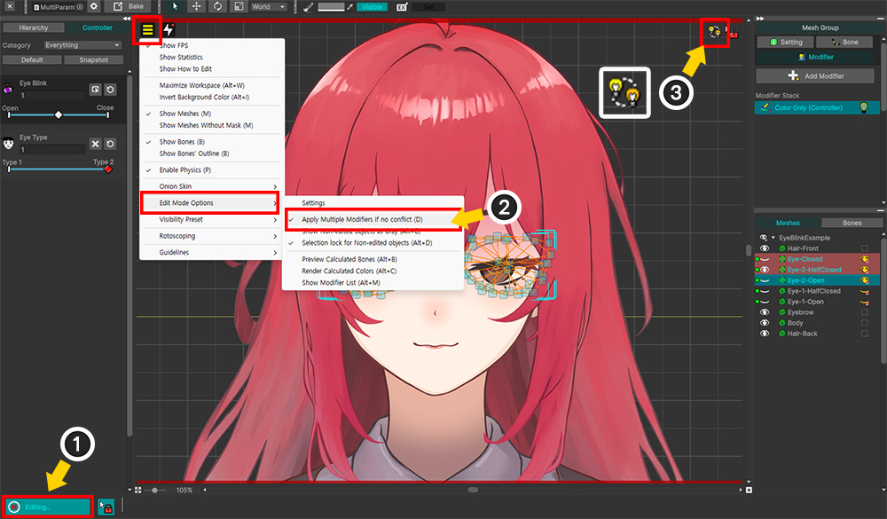
編集モードでは、デフォルトではターゲット制御パラメータやモディファイア以外はすべて無効になります。
したがって、複数の値を組み合わせた結果を表示するには、編集モードをオフにする必要があります。
ただし、「編集モードオプション」（関連ページ）を変更して、他のモディファイアや他の制御パラメータによる演算結果を編集モードでもプレビューできます。
(1) 「編集モード」をオンにします。
(2) 「表示メニュー」を開き、「D）を有効にすると、組み合わせたカラー結果を編集モードで表示できます。
(3) ワークスペースの右上のアイコンを確認して、複数の値が編集モードで組み合わせて表示されている状態かどうかを確認できます。